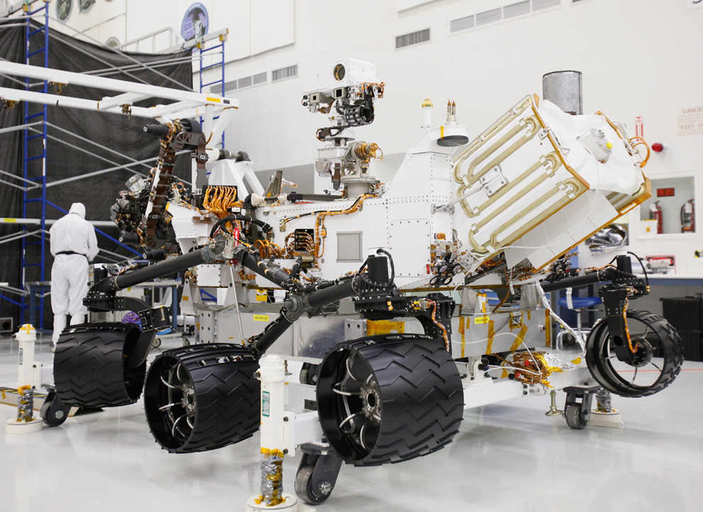
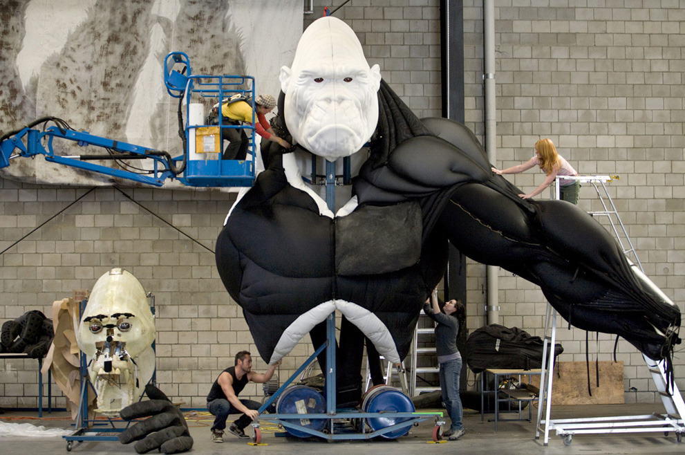

Sun, 24 Apr 2011 04:04:00 · robots · photography · skynet
awesome photos of robots at work in our daily


Awesome photos of robots at work in our daily lives - These machines – some fully autonomous, some requiring human input – extend our grasp, enhance our capability, and travels as our surrogates to dangerous places.
Skynet era is certainly closer to reality…